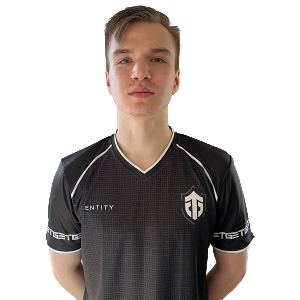
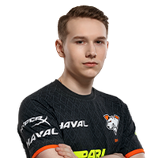
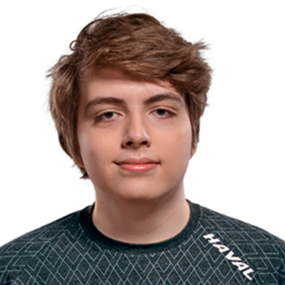
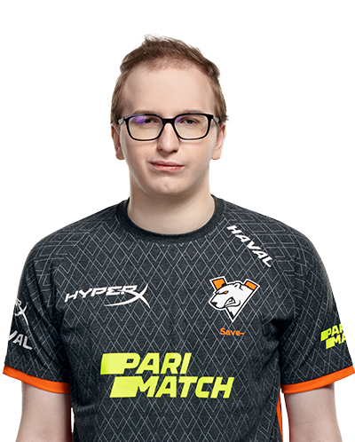
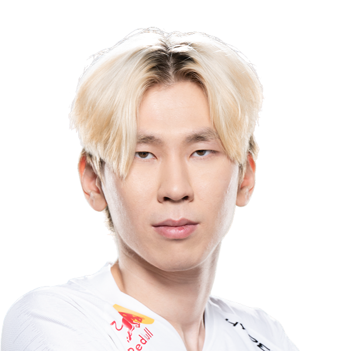
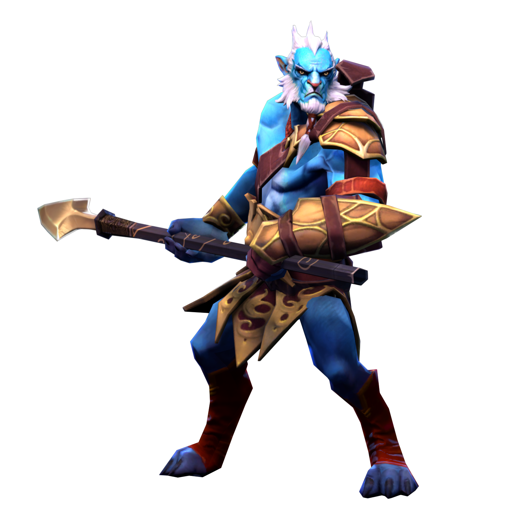
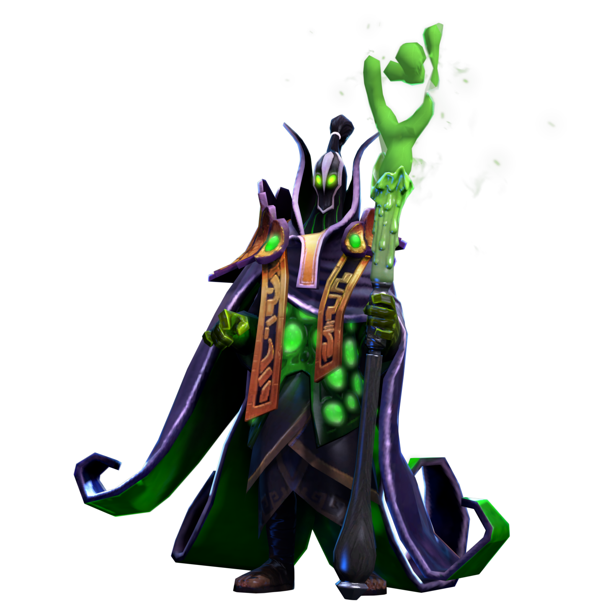
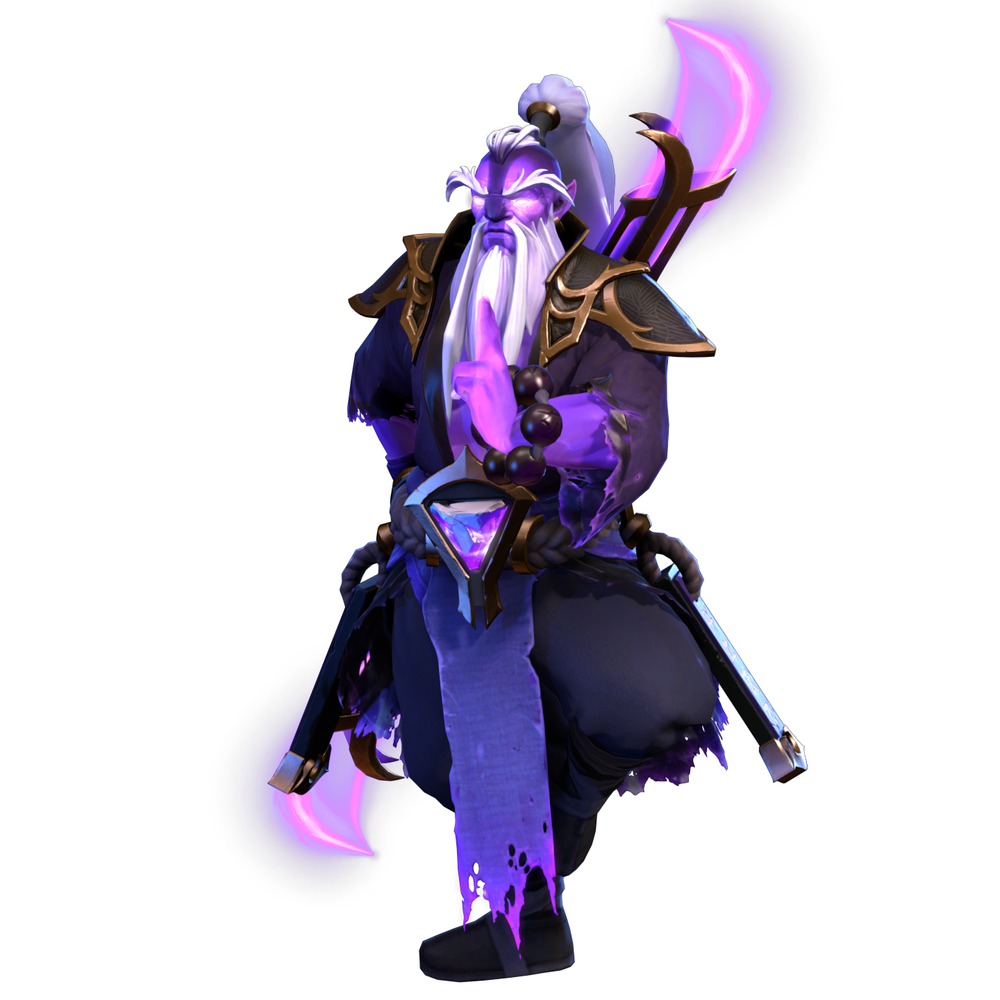

Pure

gpk

Nightfall
Save-

TORNTOTOKYO

Иван "Pure" Москаленко - Молодая звезда игрок позиции 1 в BetBoom Team до этого играл в таких командах как Virtus.Pro и Entity В Entity он добился таких резульатов как топ 9-12 The International 11 а так же многие выходы на мажоры и ESL one Malasiya один из немногих кто добрался до 12000 рейтинга

Данил "gpk" Скутин - Довольно оптный игрок начинающий свою карьеру в Gambit уничтожая всех на своем пути. Успел поиграть за такие команды как Gambit VP.Prodigy Virtus.Pro Выходил на множество мажоров и показывал достольные результаты. Самое лучшее достижение Топ 5-6 The International 10

Егор "Nightfall" Григоренко - Один из лучших игроков на позиции 1 но в прошлом году сменил позицию на 3 и начал показывать феноменальные результаты Играл в таких командах как Evil Geniuses VP.Prodigy Virtus.Pro являлся бывшим тиммейтом GPK и Save так же выходил на мажоры и лутал бабки лучшее достижение топ 5-6 инта в свое время имел по 5 смурфов в топ 10

Виталий "Save-" Мельник лучший игрок на позиции 4 стабильно входит в топ 10 играя на саппорте играл в таких в составах как Virtus Pro И VP.Prodigy Весь прошлоый год он провел в инактиве потому что его лучший хайскильный друг Nightfall Ушел в америку играть так же высочайший результат 5-6 на ти10

Александр "TORONTOTOKYO" Хертек - Победитель The International 10 один из самых смелых игроков, в прошлой команде Team Spirit стабильно выхолдил на каждые мажоры были лидерами СНГ а так же провальный прошлый The International 11 что последовало уходу из предыдущей команде
